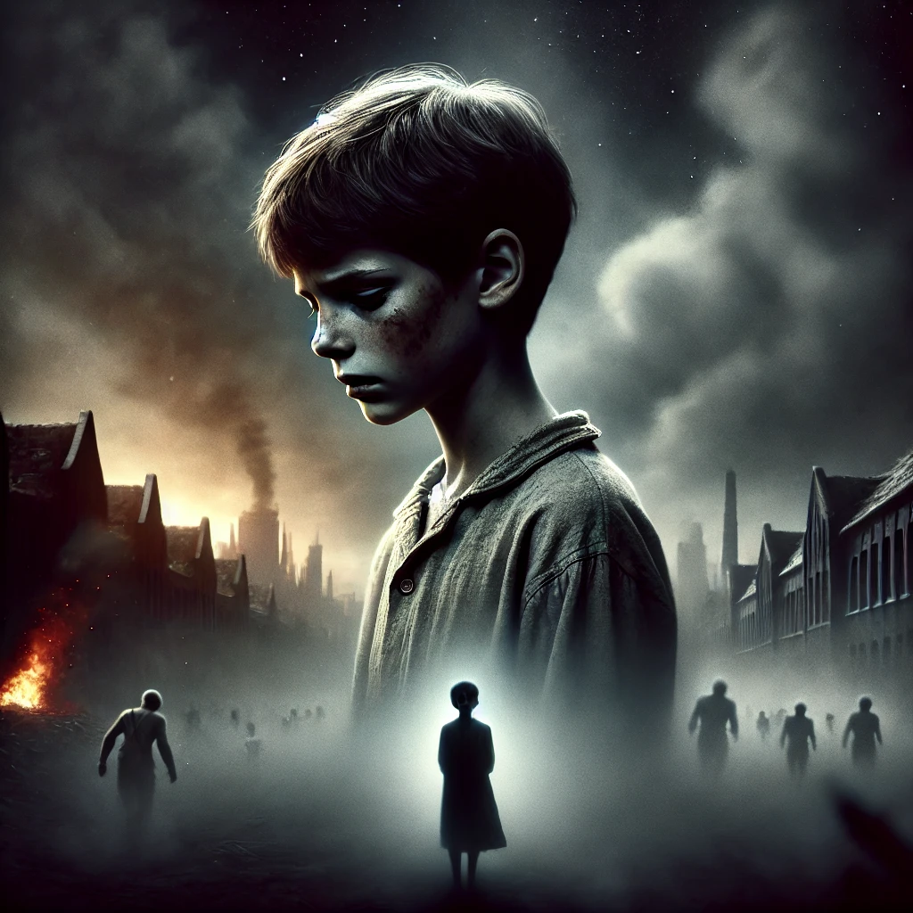

소년이 온다
목차
작가
한강
출판일
2014년
감상평에 대한 AI그림
1980년 5월 18일부터 열흘간 있었던 광주민주화운동 당시의 상황과 그 이후 남겨진 사람들의 이야기를 철저한 고증과 취재를 바탕으로 그려내며, 5.18 당시 숨죽이며 고통받았던 인물들의 숨겨진 이야기를 하나하나 힘겹게 펼쳐 보여 그들의 아픔을 어루만지고 그 시대를 증언하는 숙명과도 같은 소명을 다하는 책이다.

감상평에 대한 AI평가
1980년 광주 민주화 운동을 배경으로 한 가슴 아픈 이야기를 담고 있다.
✨ 역사적 사건을 통해 인간의 존엄성과 저항의 의미를 깊이 생각하게 만든다.
✨ 각 인물의 감정과 고통을 섬세하게 묘사하여 독자의 마음을 사로잡는다.
✨ 읽는 내내 눈물을 자아내는 감동적인 작품이다.